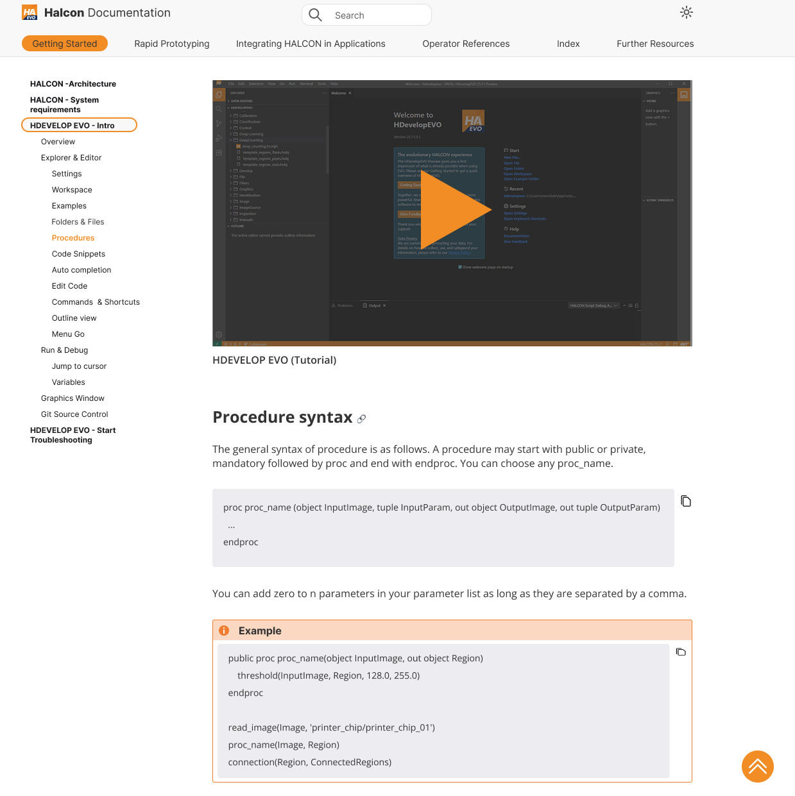

The content was there. The experience wasn't.
The HDevelopEVO documentation was being renewed completely. The goal was to make it more user-friendly: easier to use, easier to learn, and easier to search when you were looking for something specific. This was a design and UX project, not a content project. I didn't rewrite the documentation. I redesigned how it was structured and presented.
I ran the project on my own, with regular feedback rounds with UX designers and developers.
Paper for first sketches, Figma for prototypes and the style guide, Confluence for documentation and feedback.
A Figma and Confluence style guide. The developers later implemented the redesign.
From a list of problems to a style guide.
I ran this project on my own, but never in isolation. I was still fairly new to HDevelop when I started and not deep into the program yet, so I began by listening and collecting before designing anything. Feedback from colleagues ran through every step.
Opening the conversation on Confluence
Before anything else, I created a Confluence page that was open to everyone. Anyone working with or interested in the documentation could comment with their ideas and suggestions. That page stayed the central place for feedback for the rest of the project.
Understanding the current state
Because I was new to the program, I started by mapping how the current workflows worked: how people navigated, searched and tried to find something specific. Along the way, I built a list of problems:
- What wasn't usable
- What was missing
- What was confusing
- What could be done much more simply
Looking at how others did it
I looked at other documentation systems and learning platforms and asked myself what made them easy to learn and easy to find my way around. The focus stayed on structure, design and UX, not on the content itself. From there, I gathered the main ideas for how the documentation could be restructured.
Pairing every problem with a solution
I put the ideas into a table that paired each problem with a concrete improvement, illustrated with images. This gave everyone something specific to react to. I shared it, collected feedback and adjusted it before I started prototyping.
From paper sketches to page-by-page prototypes
Before opening Figma, I sketched the new structure on paper: navigation, hierarchy and page layout. This let me try out ideas quickly. Then, in Figma, I started with the main page and went through every type of layout the documentation could have. For each one, I checked it against my problem list and applied the improvements. I only used colors that already existed in the software. The result was two examples that showed how the documentation could look in the future.
Iterating with everyone involved
I went through several rounds of discussion with the UX team, the developers, product management and anyone else interested in the topic. Each round fed back into the designs, so the solution was shaped by real constraints and not just by ideal ones.
Styleguide & handover
Finally, I turned the work into a styleguide in Figma and in Confluence, so the people building the documentation had a clear reference. The developers later implemented the redesign.
From one long list to a clear structure.
The starting point was an in-between state of the documentation. I redesigned it into two examples, which showed two sides of how the documentation could look in the future.



What changed and why.
Every change used colors that already existed in the software. I didn't add new ones.
Visible navigation states
Users could never tell which tab was selected, because bold and hover effects looked almost like the normal state. A background color made the current position clear.
Hierarchical sidebar
The left sidebar used to be one very long list with no hierarchy, plus a redundant breadcrumb. I dropped the breadcrumb, reorganized the headlines and kept a manageable number of subcategories per category.
One tutorial per category
Many platforms used videos instead of only text. Each main category got a tutorial, so users, especially new ones, could choose whether to watch or read.
A go-up button you can find
The button existed only on some pages and was hard to spot. It got an orange background and the same position on every page.
Consistent headline area
Every page followed the same hierarchy: the headline selected in the sidebar, a one-line description, then tabs for the topics within that category. Topics lived only on the page, so users scrolled less.
Collapsible operator lists
Lists of operators and important terms used to sit at the bottom as long, open lists. They moved to the top of each subcategory as collapsible sections, which kept pages calm when closed.
Images with context
Images were important for documentation, so I added them, with the related description placed right next to each image.
Shorter, structured text
Text and examples stayed mostly the same, but I made them more structured and shorter where they repeated themselves.
A shared reference for the people building it.
The documentation was built like a website, so the developers needed a clear guide to follow. I created a style guide in Figma and a matching one in Confluence. It was based on the actual implementation, not on the earlier examples that had been handed to the developers before.